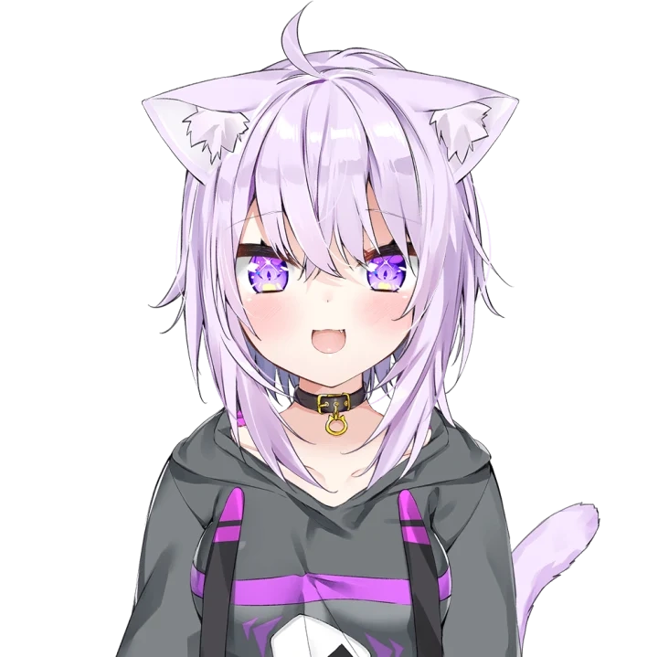

|  | Nekomata OkayuNekomata Okayu (猫又おかゆ) is a female Japanese Virtual YouTuber associated with hololive, debuting as part of the group "hololive Gamers" (ホロライブゲーマーズ) alongside Shirakami Fubuki, Ookami Mio and Inugami Korone. Debut Date YouTube: 2019/04/06 |
| Dte | 4ccomplishments |
|---|---|
| 2019 | On 4 October, she debuted her 3D model during a stream |
| 2020 | On 12 June, she debuted her third 2D costume, a sailor fuku inspired design during a stream |
| 2021 | On 23 February, she reached 900,000 subscribers on YouTube. |
| 2022 | On 9 January, Okayu debuted a new 3D costume, in which she revealed in the hololive ERROR stream in her channel. |